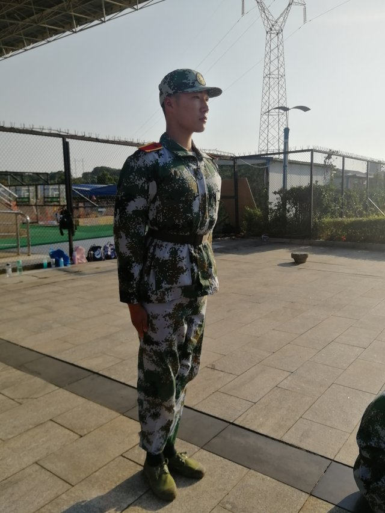

不经历风雨,怎么见彩虹,如果没有经过历练,我们如何得到成长呢?正是因为军训,我们明白了吃苦耐劳是多么重要的精神,也正是因为军训,才锻炼了我们坚强的意志。
山没有悬崖峭壁就不再险峻，海没有惊涛骇浪就不再壮阔，河没有跌宕起伏就不再壮美，人生没有挫折磨难就不再坚强。樱花如果没有百花争艳我先开的气魄，就不会成为美丽春天里的一枝独秀；荷花如果没有出淤泥而不染的意志，就不会成为炎炎夏日里的一位君子；梅花如果没有傲立霜雪的勇气，就不会成为残酷冬日里的一道靓丽风景；人如果没有坚持到底的毅力，就不会成为紧张军训中的一颗亮星。

军训虽然结束了，但在军训收获的友谊却不会结束